Guide de première utilisation du Surveillant Général
Version du document
2.0 · Octobre 2026
Sommaire
1. Se connecter et se repérer
2. Mon profil, mon mot de passe, les notifications
3. Paramètres de l'établissement et barèmes
4. Années scolaires et séquences
5. Spécialités et classes
6. Groupes de matières
7. Enseignants
8. Matières
9. Élèves
10. Réinscriptions
11. Notes
12. Bulletins et cartes scolaires
13. Statistiques et classement
14. Vos décisions et le Proviseur
15. L'application mobile et questions fréquentes
Votre rôle. Vous organisez l'année : établissement, années et séquences, spécialités, classes, groupes, matières, comptes des enseignants, élèves. Vous éditez les bulletins, les listes et les cartes scolaires, et vous consultez toutes les notes et statistiques. Pour l'ordre de mise en place, suivez le Guide de première utilisation.
1. Se connecter et se repérer
Connectez-vous avec votre téléphone ou votre e-mail et votre mot de passe. L'œil à droite du champ affiche le mot de passe tapé ; « Rester connecté » garde la session sur l'appareil (décochez-la sur un ordinateur partagé). Une session dure 12 heures.
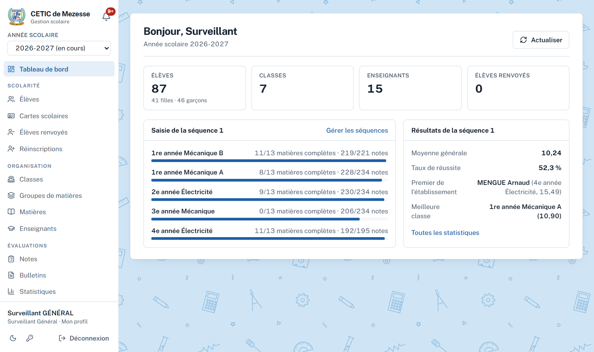
Figure 1 — Tableau de bord du Surveillant Général
Année scolaire, en haut du menu : l'année consultée. Les années passées restent consultables.
Le menu se divise en Scolarité, Organisation, Évaluations et Administration.
La cloche : vos notifications. Votre nom, en bas du menu : votre profil.
Actualiser, en haut à droite de chaque page : recharge les données affichées.
2. Mon profil, mon mot de passe, les notifications
Touchez votre nom en bas du menu pour corriger votre prénom, votre nom, votre téléphone ou votre e-mail. Changer de téléphone ou d'e-mail demande votre mot de passe, car ils servent à vous connecter. Le bouton Changer mon mot de passe y est relié.
Figure 2 — Mon profil (ici, celui d'un professeur)
Vous recevez une notification quand le Proviseur désapprouve une de vos décisions, avec son motif et ce qui a été défait (voir le chapitre 14).
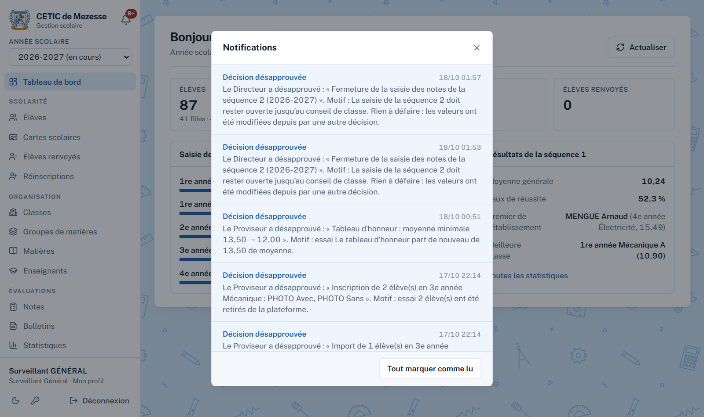
Figure 3 — Notification d'une décision désapprouvée
3. Paramètres de l'établissement et barèmes
Menu Administration → Paramètres. Les informations de l'établissement s'impriment sur les bulletins, les listes et les cartes scolaires : nom en français et en anglais, sigle, région, département, arrondissement, localité, code, boîte postale, téléphone. Le préfixe des matricules sert à générer les matricules des élèves (par exemple CTM26-0007).
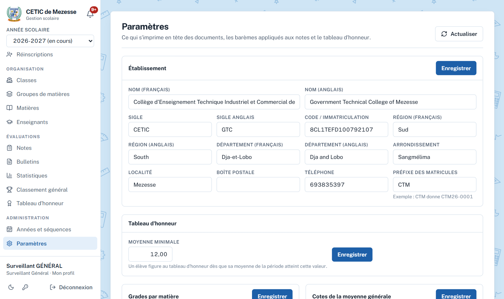
Figure 4 — Paramètres
Les barèmes donnent le grade d'une matière (A, B+…) et la cote de la moyenne générale (CTBA, CBA…). Chaque mention a une borne basse incluse ; un barème commence toujours à 0.
4. Années scolaires et séquences
Menu Administration → Années et séquences. Une année compte six séquences, deux par trimestre. Une seule année est « en cours » : c'est celle que voient les professeurs.
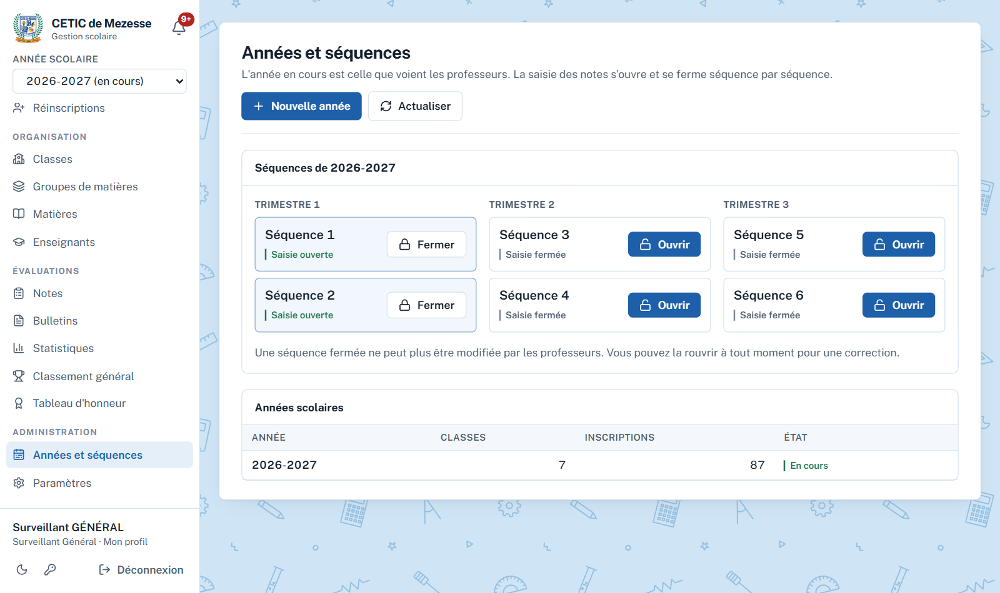
Figure 5 — Années et séquences
1
Nouvelle année. Saisissez le libellé (2027-2028). Avec « Reprendre l'organisation de », les classes, groupes, matières, coefficients et enseignants d'une autre année sont recopiés ; les élèves se réinscrivent ensuite (chapitre 10). L'année peut devenir l'année en cours tout de suite, ou plus tard depuis la liste des années.
2
Ouvrir une séquence permet aux professeurs de saisir leurs notes. Ceux qui ont une matière cette année reçoivent une notification.
3
Fermer la séquence la met en lecture seule. Vous pouvez la rouvrir à tout moment pour une correction.
5. Spécialités et classes
Menu Organisation → Classes. Le bouton Spécialités ouvre la liste des spécialités (Mécanique, Électricité…), communes à toutes les années. Renommer une spécialité renomme les classes qui la portent ; une spécialité portée par une classe ne peut pas être supprimée.
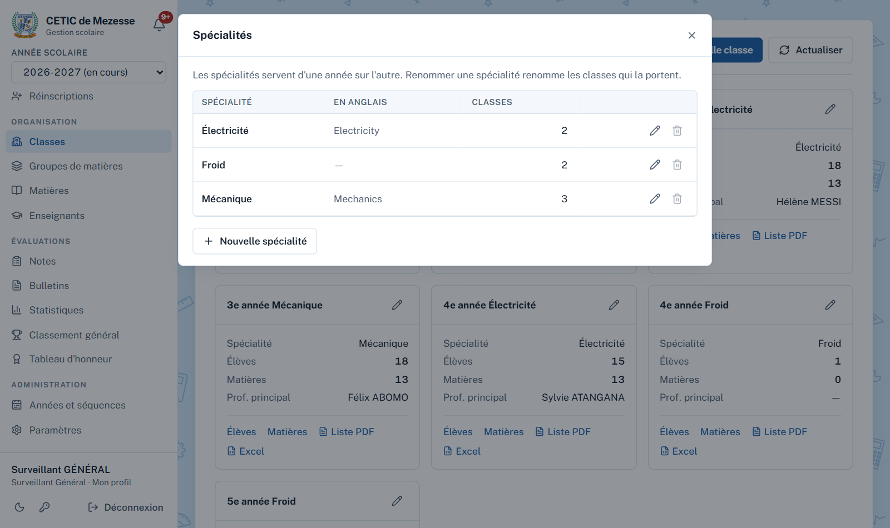
Figure 6 — Les spécialités
Nouvelle classe : choisissez le niveau et la spécialité, puis le professeur principal. Le nom se calcule tout seul : niveau, spécialité, puis une lettre A, B… seulement si le niveau et la spécialité comptent plusieurs classes. L'aperçu indique aussi les classes qui seront renommées (par exemple « 1re année Mécanique » qui devient « 1re année Mécanique A »).
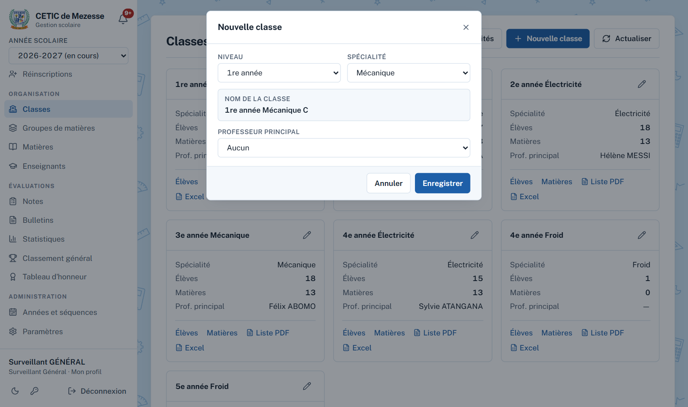
Figure 7 — Nouvelle classe : le nom est calculé
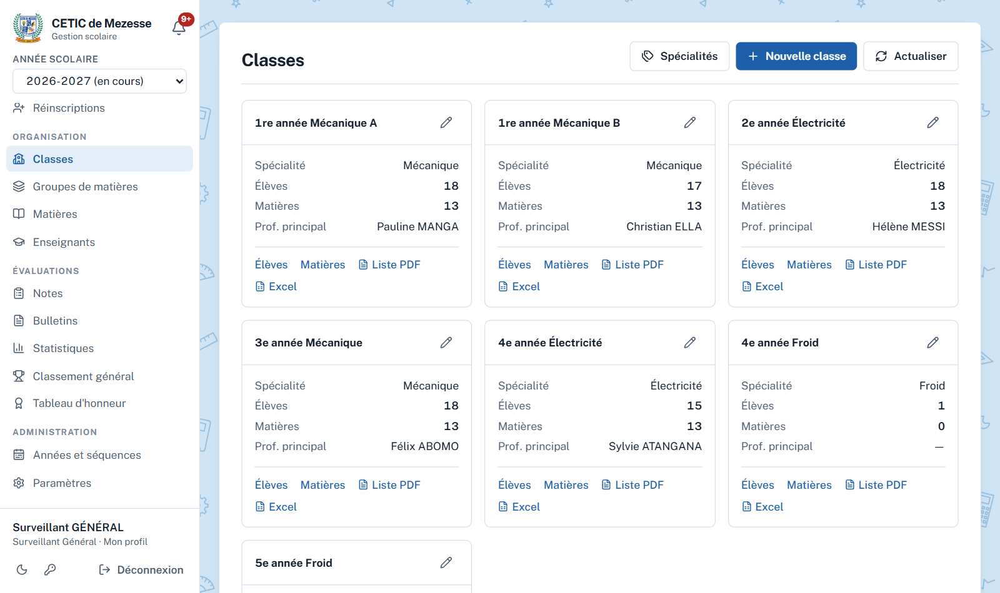
Figure 8 — Les classes de l'année
Chaque carte de classe donne accès à ses élèves, à ses matières, et à la liste des élèves en PDF ou en Excel. Une classe sans élève peut être supprimée (bouton Supprimer dans sa fenêtre de modification) ; ses matières sont supprimées avec elle et les lettres des autres classes se resserrent.
6. Groupes de matières
Menu Organisation → Groupes de matières. Un groupe (matières générales, professionnelles, complémentaires…) regroupe les matières sur le bulletin et donne une moyenne de groupe. Il est rattaché aux classes qui l'utilisent, et son ordre fixe sa place sur le bulletin.
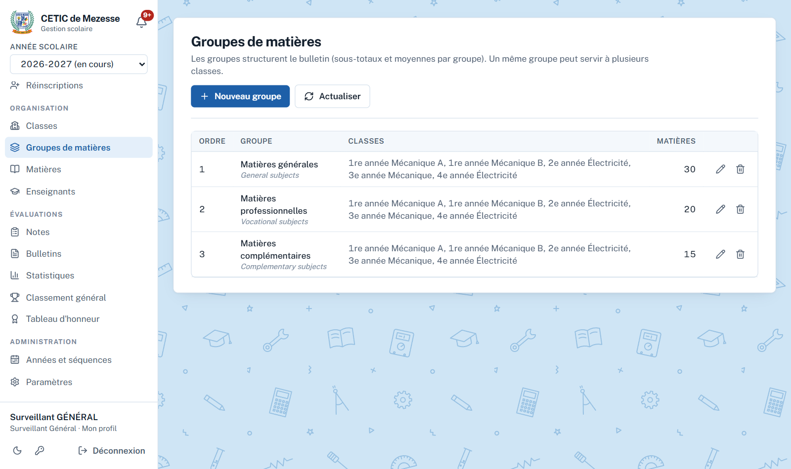
Figure 9 — Groupes de matières
On ne peut pas retirer d'un groupe une classe dont des matières sont encore dans ce groupe, ni supprimer un groupe qui contient des matières : déplacez ou supprimez d'abord ces matières.
7. Enseignants
Menu Organisation → Enseignants. Nouvel enseignant : nom, prénom, téléphone ou e-mail (au moins l'un des deux, chacun unique), discipline. Le compte reçoit le mot de passe provisoire password, que le professeur change à sa première connexion.
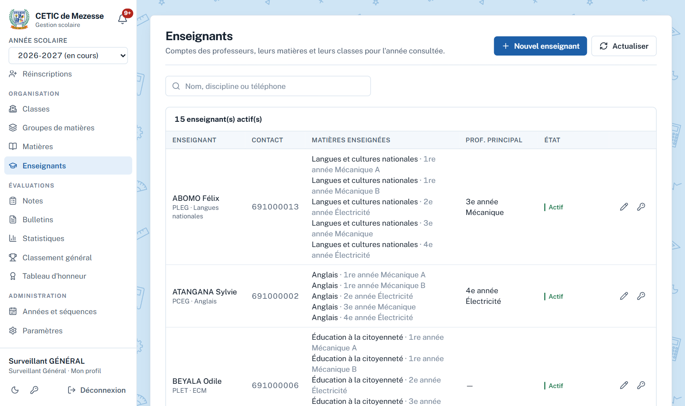
Figure 10 — Enseignants, avec leurs matières et classes
Réinitialiser le mot de passe d'un professeur qui l'a oublié : il redevient password.
Désactiver un compte : la personne perd l'accès immédiatement ; ses notes restent.
8. Matières
Menu Organisation → Matières. Une matière appartient à une classe et à un groupe rattaché à cette classe. Son coefficient est un entier de 1 à 20 ; son ordre fixe sa place dans le groupe sur le bulletin ; elle a au plus un professeur.
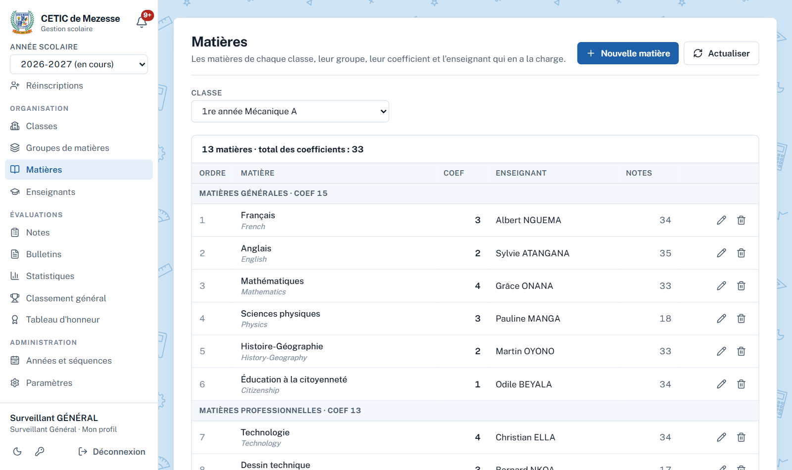
Figure 11 — Matières d'une classe
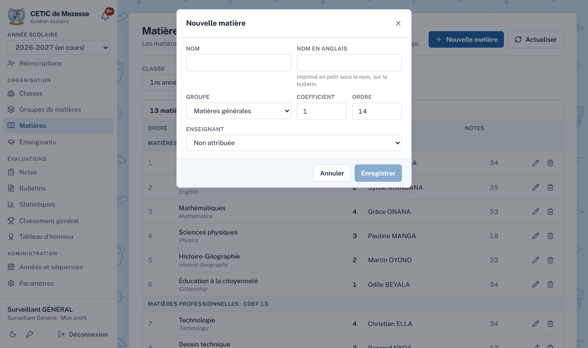
Figure 12 — Nouvelle matière
Supprimer une matière qui a des notes demande une confirmation et efface ses notes. Une matière notée ne peut plus changer de classe.
9. Élèves
Menu Scolarité → Élèves. La liste montre les élèves inscrits de l'année, par classe, avec une recherche par nom, prénom ou matricule. Les boutons Liste PDF et Excel produisent la liste de la classe choisie.
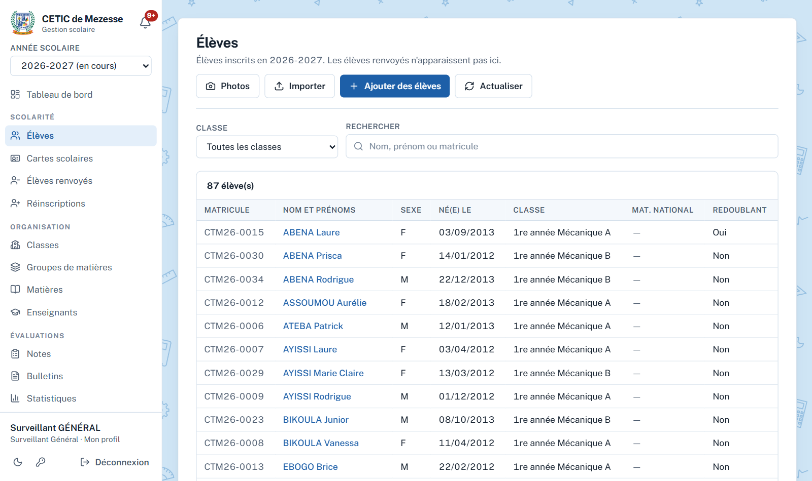
Figure 13 — Les élèves
Inscrire des élèves
Ajouter des élèves : choisissez la classe, puis remplissez une ligne par élève (nom, prénoms, sexe, date et lieu de naissance, redoublant, parent et son téléphone). La photo est facultative : cliquez la case Photo de la ligne. Une nouvelle ligne s'ajoute dès que vous remplissez la dernière ; les lignes vides sont ignorées. Un seul clic sur Enregistrer inscrit tout le monde.
Importer : téléchargez le modèle Excel, remplissez une ligne par élève, puis envoyez le fichier pour une classe.
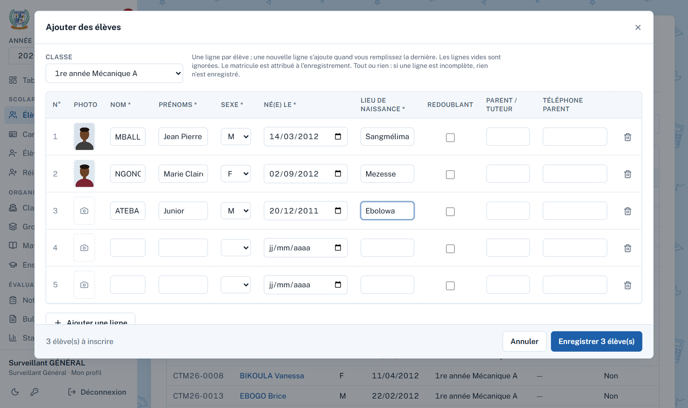
Figure 14 — Ajouter plusieurs élèves d'un coup, avec leur photo
Tout ou rien. Dans les deux cas, si une ligne est incomplète, rien n'est enregistré : les champs manquants sont entourés en rouge (ou la liste des erreurs indique quoi corriger dans le fichier). Le matricule scolaire est attribué à l'enregistrement ; le matricule national et l'adresse du parent se complètent ensuite sur la fiche.
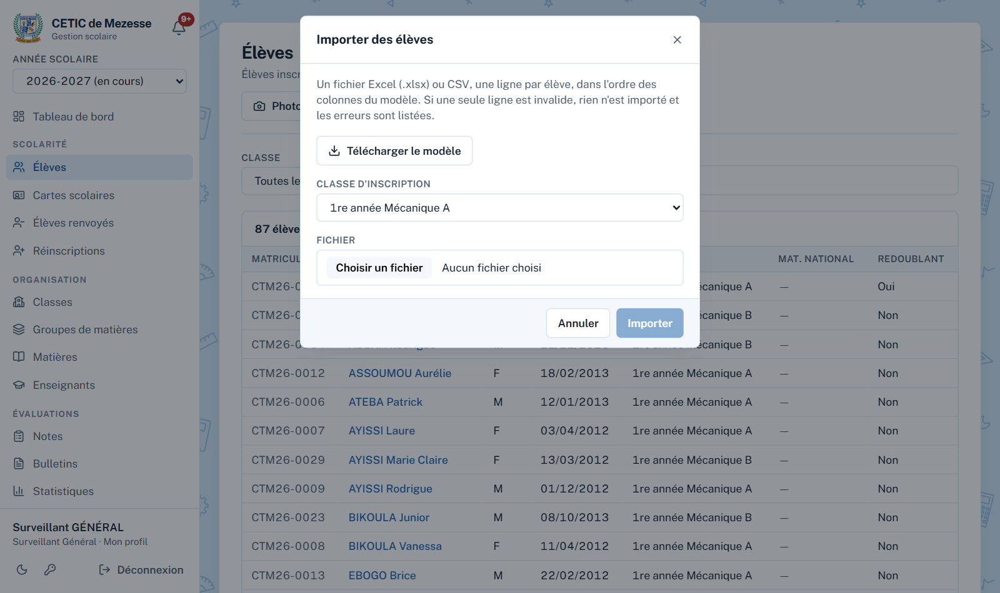
Figure 15 — Import d'élèves depuis Excel
Les photos de plusieurs élèves
Le bouton Photos montre les élèves d'une classe en vignettes. Cliquez un élève pour choisir sa photo, ou cliquez Choisir plusieurs photos : chaque fichier nommé avec le matricule de l'élève (par exemple CTM26-0047.jpg) est rangé chez lui. Vous pouvez aussi déposer les fichiers sur la fenêtre. « Seulement les élèves sans photo » n'affiche que ceux à qui il en manque une. Un seul Enregistrer envoie toutes les photos.
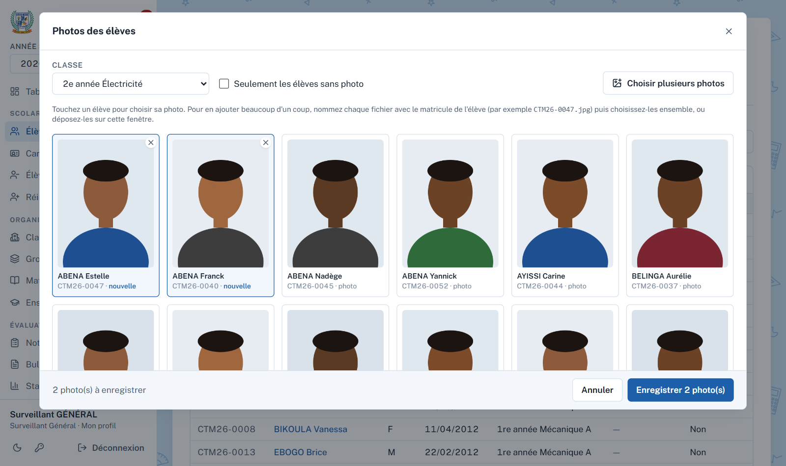
Figure 16 — Photos de plusieurs élèves
Les photos sont réduites avant l'envoi : une photo de téléphone de plusieurs Mo pèse alors une centaine de Ko. Sur le téléphone, chaque photo se prend directement avec l'appareil.
La fiche de l'élève
Elle regroupe l'identité, la photo, le parcours dans l'établissement et les documents : Générer le bulletin pour la période choisie, et Carte scolaire, disponible dès que l'élève a une photo. Modifier corrige la fiche ; un élève qui a déjà des notes ne change plus de classe dans l'année.
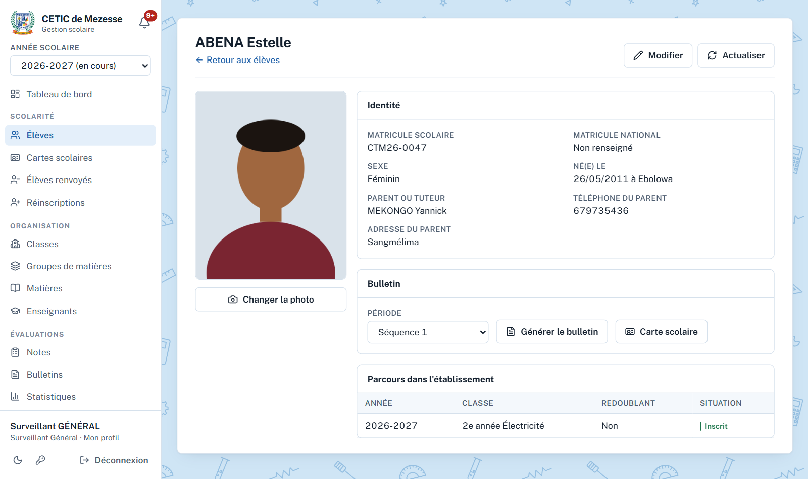
Figure 17 — Fiche de l'élève
10. Réinscriptions
Menu Scolarité → Réinscriptions. La réinscription inscrit dans la nouvelle année des élèves d'une année précédente, en gardant leur matricule et leur historique. Elle demande donc au moins deux années.
1
Créez la nouvelle année et ses classes (chapitre 4), puis choisissez-la en haut du menu.
2
Élèves à réinscrire : choisissez l'année et la classe d'origine, puis cochez les élèves. Seuls ceux qui ne sont pas encore inscrits dans la nouvelle année sont proposés.
3
Classe d'accueil dans la nouvelle année ; cochez « Inscrire comme redoublants » si besoin, puis Réinscrire.
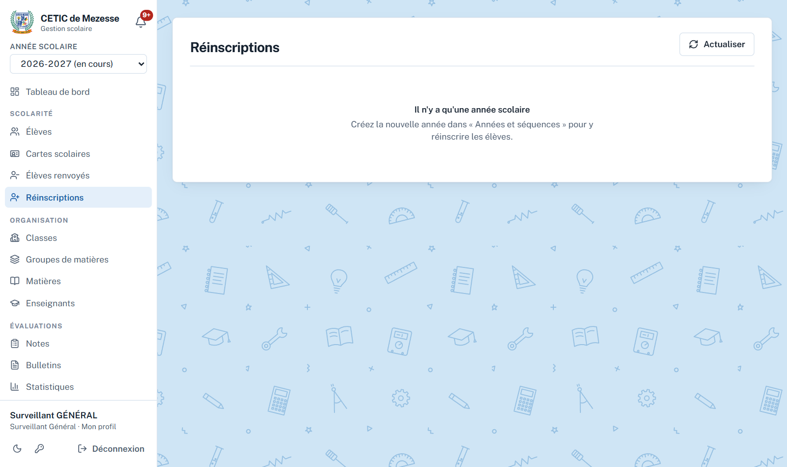
Figure 18 — Réinscriptions : avec une seule année, la page invite à créer la suivante
11. Notes
Menu Évaluations → Notes. Pour une classe et une période : le relevé des notes, les moyennes et les rangs, avec Exporter en Excel. L'onglet Notes manquantes liste, matière par matière, les élèves sans note et leur professeur : utile avant de fermer une séquence.
Figure 19 — Relevé des notes d'une classe
Les notes en rouge sont sous la moyenne. Une note de trimestre est la moyenne des séquences évaluées du trimestre ; la note annuelle, la moyenne des trimestres évalués. Les moyennes sont pondérées par les coefficients.
12. Bulletins et cartes scolaires
Bulletins
Menu Évaluations → Bulletins. Choisissez la période, puis des classes entières ou des élèves choisis. Un seul PDF est produit, une page A4 bilingue par élève, prête à imprimer.
Figure 20 — Bulletins de notes
Cartes scolaires
Menu Scolarité → Cartes scolaires. Même choix des classes ou des élèves. Les cartes sont au format carte bancaire (85,6 × 54 mm), dix par page A4, avec des traits de coupe pour les découper à la main.
Figure 21 — Cartes scolaires : vérification des photos
La photo est obligatoire. Dès que vous choisissez des élèves, l'application vérifie leurs photos et liste ceux qui n'en ont pas. Le bouton Ajouter les photos manquantes ouvre directement la fenêtre des photos sur ces élèves. Leur carte n'est pas imprimée tant que la photo manque.
13. Statistiques et classement
Menu Évaluations → Statistiques, pour une période et sur trois onglets : Établissement, Par classe, Par matière. On y trouve la moyenne générale, le taux de réussite, les moyennes extrêmes, l'écart-type, le premier et le dernier élève, la meilleure et la dernière classe, la répartition des moyennes et la comparaison filles–garçons. Classement général : tous les élèves de l'établissement rangés ensemble.
Figure 22 — Statistiques de l'établissementFigure 23 — Classement général
Les rangs se calculent sur les moyennes arrondies au centième ; des élèves ex æquo partagent le rang et le suivant est sauté. Un élève réussit avec une moyenne de 10 ou plus. Un élève renvoyé sort des listes, des calculs et des classements.
14. Vos décisions et le Proviseur
Chacune de vos actions d'organisation, de scolarité ou d'administration (créer une classe, modifier une matière, inscrire un élève, ouvrir une séquence…) est consignée dans le journal Décisions prises, que seul le Proviseur consulte. Elle est approuvée d'office.
Le Proviseur peut la désapprouver pendant 4 semaines, avec un motif. L'action est alors défaite : une classe créée est supprimée, une modification est annulée, un élément supprimé est recréé.
Vous recevez une notification avec le motif et ce qui a été défait.
Passé 4 semaines, la décision reste approuvée.
Si l'action ne peut plus être défaite (par exemple, des élèves sont déjà inscrits dans la classe créée), la désapprobation est refusée et le Proviseur en voit la raison.
15. L'application mobile et questions fréquentes
L'application Android offre les mêmes écrans. Elle s'ouvre sans attendre le serveur, garde une copie des écrans déjà consultés pour les relire sans réseau, et affiche sa version en bas de l'écran de connexion et du menu. L'icône ↻ en haut de l'écran actualise la page.
Question
Réponse
Une classe refuse d'être supprimée.
Des élèves y sont inscrits. Changez-les de classe ou retirez-les d'abord.
Je ne trouve pas le groupe dans « Nouvelle matière ».
Le groupe n'est pas rattaché à cette classe. Ajoutez la classe dans la page Groupes de matières.
Un professeur ne voit pas sa matière.
La matière n'a pas de professeur attribué, ou c'est un autre compte. Vérifiez dans Matières.
Les professeurs ne peuvent pas saisir.
La séquence n'est pas ouverte (Années et séquences).
Un élève n'a pas de carte scolaire.
Il n'a pas de photo. Ajoutez-la avec le bouton Photos de la page Élèves, ou depuis sa fiche.
Une action que j'ai faite a été annulée.
Le Proviseur l'a désapprouvée : la notification en donne le motif.